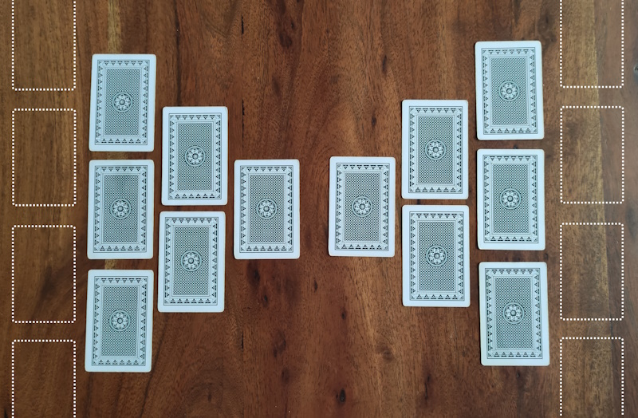
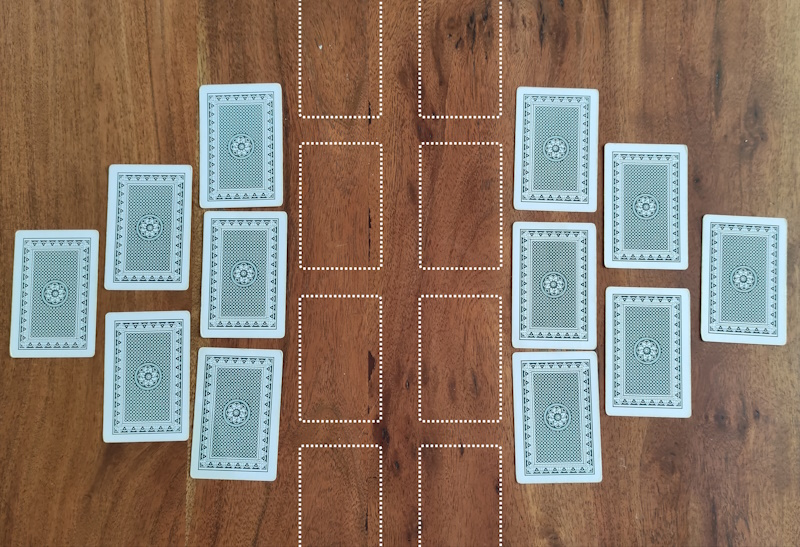
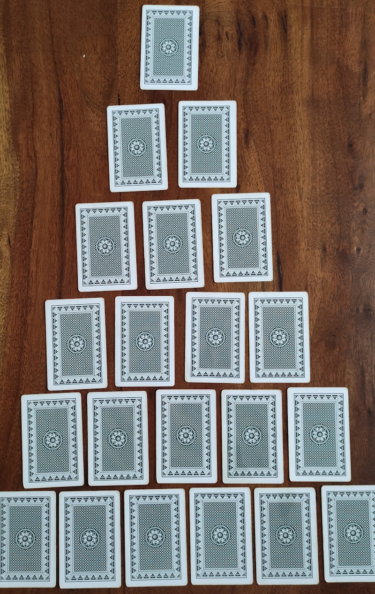

Indiana Jones

Présentation
2 ou plus
40 minutes
4,5/10
-
1 paquet de 54 cartes
(+1 tous les 8 joueurs)
Inidana Jones est un jeu qui se déroule en 3 étapes, préparation des aventuriers, traversée du désert et exploration de la pyramide. Il vous faudra faire preuve de logique, de chance et de courage afin de parvenir à mener à bout cette expédition.
Préparation
- Désignez un joueur qui sera le RJ.
- Le RJ mélange toutes les cartes et forme une pile face caché qu'il garde avec lui.
- Vous êtes prêt à jouer.
Règles
La règle des tentatives de pin n'est pas mise en place.
Préparation des aventuriers
Cette étape se déroule en 4 tours. Pour cette étape, l'As vaut 1 et est donc la plus petite carte.
À chaque tour le RJ demande à tour de rôle à chaque joueur (y-compris lui) de devinner la spécificité de la carte du dessus de la pile.
Au tour 1, la spécificité est, est-ce que la carte est de couleur rouge ou de couleur noir.
Au tour 2, la spécificité est, est-ce que la carte est de valeur inférieur, supérieur ou égale à la carte déjà possédé par le joueur.
Au tour 3, la spécificité est, est-ce que la carte est de valeur intérieur, extérieur ou égale aux 2 cartes déjà possédé par le joueur.
Au tour 4, la spécificité est, est-ce que la carte est de signe pique, trèfle, carreau ou coeur.
À chaque fois qu'un joueur a raison, il distribue 1 gorgée au joueur de son choix.
À chaque fois qu'un joueur se trompe, il boit 1 gorgée.
Le RJ donne la carte au joueur qui la conserve face visible devant lui.
Lorsqu'un joker est retourné le joueur invente une règle qui durera jusqu'à la fin du jeu.
Le RJ donne le joker ainsi que la 1ère carte de la pile au joueur, il gagne forcément et distribue donc 1 gorgée.
Toutes les cartes sont conservés par les joueurs pour l'étape 2.
Traversée du désert
Au préalable, le RJ retire de la pile tous les joker restants.
Si la dernière carte retournée est de valeur pair
Formez 2 petites pyramides qui se rejoigne par un sommet.
Si la dernière carte retournée est de valeur impair
Formez 2 petites pyramides qui se rejoigne par une base.
Mettez autant de ligne que vous le souhaitez mais il faut toujours qu'il y ai un nombre égale de carte sur chacune des petites pyramide.
Le RJ définit une direction qui indiquera dans quel sens les cartes seront retournées.
La 1ère ligne vaut 1 gorgée, la 2ème vaut 2 gorgées, la 3ème vaut 3 gorgées et ainsi de suite.
Si la dernière carte retournée est de couleur rouge
La 1ère ligne fait distribuer, la 2ème ligne fait boire et ainsi de suite 1 ligne sur 2.
Si la dernière carte retournée est de couleur noir
La 1ère ligne fait boire, la 2ème ligne fait distribuer et ainsi de suite 1 ligne sur 2.
Le RJ retourne les cartes les unes après les autres, en commençant par la 1ère ligne, et annonçe les valeurs.
Les joueurs possèdant au moins une carte de même valeur que la carte retourné doivent se prononcer et appliquer les spécificités de la ligne pour chacunes de ses cartes correpondantes.
Vous pouvez appliquez la règle du "der".
Si un joueur oublie de se prononcer et qu'une autre carte et retourné, tant pis pour lui.
Un joker vaut n'importe quel valeur 1 fois dans l'étape.
Une fois le joker utilisé, le joueur doit le redonner au RJ qui le mettra de côté.
Si aucun joueur n'a de carte de même valeur que la carte retourné, le RJ la recouvre par la 1ère carte de la pile.
Si il n'y a plus de carte dans la pile, c'est tant pis.
Exploration de la pyramide

Le RJ reprend toutes les cartes et les mélanges, joker compris.
Ensuite, ll place des cartes face cachés sur la table de tel sorte à former une pyramide de 6 étages.
Le joueur qui a été le dernier à boire à la fin de l'étape 2 est désigné comme étant l'explorateur.
Si plusieurs joueurs ont bu lors de la fin de l'étape 2, faite un Toss pour désigner l'explorateur.
L'explorateur commence à la base de la pyramide et doit retourner une carte de l'étage 1.
Si ce n'est pas une carte piège, il passe à l'étage suivant, doit retourner une carte et ainsi de suite.
Si c'est une carte piège, il applique l'effet du piège, le RJ remet une carte face caché de la pile sur chacune des cartes face visble et l'explorateur repart à l'étage 1.
Si il n'y a plus de pile, retirez les cartes face visible du jeu.
Les cartes pièges sont :
- As : le joueur de son choix boit 1 gorgée et devient le nouvel explorateur.
- 6 : le joueur à sa droite boit 1 gorgée et devient le nouvel explorateur.
- 9 : le joueur à sa gauche boit 1 gorgée et devient le nouvel explorateur.
- Têtes : l'explorateur boit 1 gorgée.
Lorsqu'un joker est retourné, l'explorateur invente une règle et passe à l'étage suivant.
Si une règle implique une carte, cette carte peu être définit comme carte piège.
Si l'explorateur parvient à retourner la carte du sommet, il termine son expédition et ne pourra plus devenir explorateur.
De plus il donne un cul sec au joueur de son choix qui devient le nouvel explorateur et recommence à l'étage 1 (le RJ doit tout de même remettre des cartes sur celles face visible).
Si la dernière carte retourné est une carte piège, l'explorateur doit l'appliquer avant.
Lorsque qu'un explorateur, le joueur qui est l'explorateur bois cul sec.
Variantes
Il est possible de na pas faire les 3 étapes, vous pouvez décider de jouer la 1 et 2 ou bien la 3 indépendament.
À l'étape 1 vous pouvez changer le nombre de gorgées en fonction du tour.
Tour 1 : 1 gorgée.
Tour 2 : 2 gorgése.
Tour 3 : 3 gorgées.
Tour 4 : 4 gourgées.
À l'étape 1 vous pouvez ajouter 2 règles.
Si un joueur s'est trompé sur les 4 tours, il boit cul sec.
Si un joueur à réussi ses 4 tours, il distribue cul sec.
(Pour rappelle, un joker offre une réussite)
À l'étape 3 vous pouvez ajouter une carte piège :
3 : l'explorateur boit cul sec.
À l'étape 3 vous pouvez faire en sorte de faire boire tous les explorateurs qui n'ont pas terminé l'expédition.
Il est préférable de jouer avec un étage de moins pour cette variante.
Anecdotes
Selon ses souvenirs, ce jeu est le 1er auqeul le fou ai joué, c'était en lendemain de 1ère cuite... au bar, avec des amis de ses cousins... loin dans le sud...
À l'origine, le jeu se joue avec la carte 3 comme piège, mais comme c'était souvent le 1er de la soirée, la règle était trop brut et était retiré.